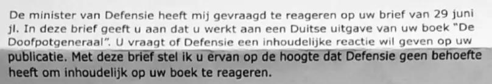

Prueba · Carta
El Ministerio de Defensa renuncia a responder sobre el fondo, 29 de julio de 2020
El pasaje
«La ministra de Defensa me ha pedido que responda a su carta del 29 de junio pasado. En esta carta indica usted que trabaja en una edición alemana de su libro “De Doofpotgeneraal”. Pregunta usted si Defensa desea dar una respuesta sobre el fondo a su publicación. Por la presente le comunico que Defensa no siente la necesidad de responder sobre el fondo a su libro». Página 1, el texto íntegro de la carta, las cinco líneas entre el encabezamiento y la despedida. Traducido del neerlandés; el texto original figura a continuación. De doofpotgeneraal es el título original neerlandés del libro El general del encubrimiento.
Texto original
“De minister van Defensie heeft mij gevraagd te reageren op uw brief van 29 juni jl. In deze brief geeft u aan dat u werkt aan een Duitse uitgave van uw boek ‘De Doofpotgeneraal’. U vraagt of Defensie een inhoudelijke reactie wil geven op uw publicatie. Met deze brief stel ik u ervan op de hoogte dat Defensie geen behoefte heeft om inhoudelijk op uw boek te reageren.” La carta escribe el título del libro «De Doofpotgeneraal», con mayúscula en ambas palabras, mientras que el libro mismo se titula De doofpotgeneraal; pone el título entre comillas dobles, que aquí, dentro de la cita, se reproducen como comillas de segundo nivel.

Por qué importa este documento
En esta carta, el Ministerio de Defensa comunica que «no siente la necesidad» de responder sobre el fondo al libro, sin dar ninguna razón para ello. El ensayo sostiene que, tras la sentencia del Tribunal Supremo de los Países Bajos de 2019, Giltay volvió a quedarse sin noticias de Defensa. En ese asunto, en el que los Países Bajos fueron declarados parcialmente responsables de unos 350 muertos de Srebrenica, los abogados de las Madres de Srebrenica habían invocado el libro, junto a decenas de otras fuentes. En 2020, Giltay invitó de nuevo formalmente a Defensa a responder sobre el fondo, esta vez con vistas a una traducción. Esta carta es la respuesta.
Procedencia
- Documento
- Carta, una página, en papel con membrete del Ministerio de Defensa
- Remitente
- Ministerio de Defensa, Dirección de Comunicación, Kalvermarkt, La Haya, a petición de la ministra de Defensa
- Destinatario
- E. Giltay
- Fecha
- 29 de julio de 2020
- Referencia
- BS2020015360
- Asunto
- «Uw brief van 29 juni jl. over een inhoudelijke reactie op De Doofpotgeneraal» (su carta del 29 de junio pasado relativa a una respuesta sobre el fondo a De Doofpotgeneraal)
- Referencias
- La carta de Giltay del 29 de junio de 2020, en la que preguntaba si Defensa quería responder sobre el fondo e indicaba que trabajaba en una edición alemana del libro
- Escrito de agravios
- El escrito de agravios de las Madres de Srebrenica (7 de julio de 2015, 330 páginas) invoca el libro junto a decenas de otras fuentes, entre ellas el informe del NIOD, el informe de la comisión parlamentaria de investigación y resoluciones del Tribunal Penal Internacional para la ex-Yugoslavia, vandiepen.
com/ wp-content/ uploads/ 2023/ 07/ 15-mvs_grieven_7-7-2015.pdf - Firmado
- Por drs. K.A. Meijer, portavoz de la Dirección de Comunicación, a petición de la ministra de Defensa; la firma manuscrita está tachada en este PDF
- Idioma
- Neerlandés
- Páginas
- 1; la hoja misma lleva la numeración «Pagina 1 van 1» (página 1 de 1)
- Conservado por
- Edwin Giltay, el destinatario
- Véase también
- Madres de Srebrenica, escrito de agravios, 7 de julio de 2015Tribunal Supremo de los Países Bajos, sentencia del 19 de julio de 2019 (ECLI:NL:HR:2019:1223)
Citado en: el ensayo «La prohibición cayó, el libro quedó en pie» en el capítulo (7) «Ninguna respuesta sobre el fondo» y en la diapositiva «Ministerio del Interior · 2014–2015» de la presentación «La historia en el mapa».
Ficha de prueba: https://
Documento: https://
Modificado por última vez el 13 de septiembre de 2026, consultado el 27 de noviembre de 2026.

Esta página es una ficha de prueba del libro El general del encubrimiento de Edwin Giltay y del sitio web que lo acompaña.